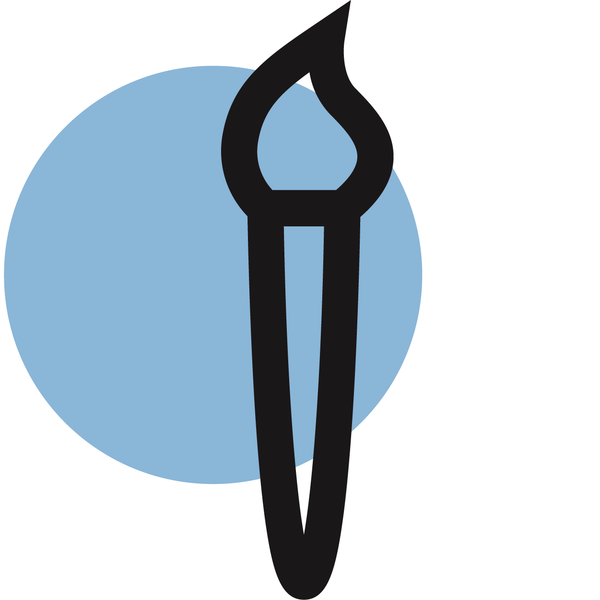
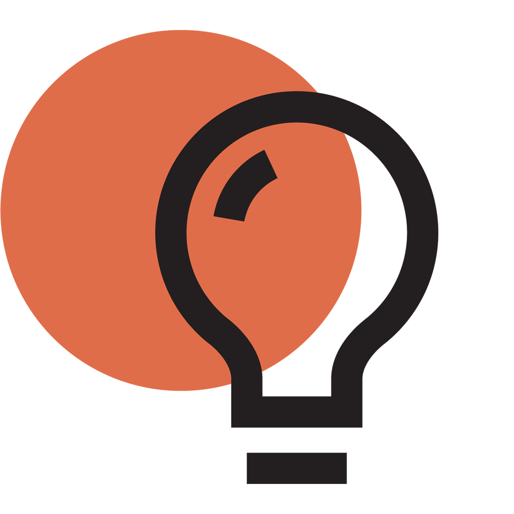

We know that great stories make real change.
We want to help you stand out, advocate, disrupt, and grow. None of this happens by sticking to the status quo. Our job is creative innovation. Our tools are video, design, and strategy. Our purpose is you.
We're all about coming up with great ideas.
Learn.
We start by learning. Our creative process is rooted in research and discussion — so we can make something that is true to you. We’ll start by getting to know your org.

Collaborate.
Community is the engine of our creativity. We’ll bring the project to our team of creatives, and think through a bunch of ideas. This collaborative approach unlocks innovate creativity.

Create.
We execute with precision. Once we’ve pitched you an idea that you love, our passionate team of videographers, designers, and marketers will bring it to life (with your input).
Meet the team that makes it happen.
{% comment %}
{% include about-profile.html right="hide" type="creat first last"
name="Amy Cooper" title="Creative"
content="Amy is a Product Designer at My Media, creating pixel-perfect digital products and creative content with incredible user experiences. She enjoys listening to music, staying active, and reading." %}
{% include about-profile.html left="hide" type="creat first last"
name="Camille Point" title="Creative"
content="Camille is a creative at My Media, specializing in graphic design and video making and ultimately driven to make a positive impact through creating compelling media content for purpose-driven organizations. She also enjoys bread and spending time with her cat." %}
{% include about-profile.html right="hide" type="creat first last"
name="Christian Younder" title="Creative"
content="Big Yoshi is the Executive Yoshi at My Media. He's a big ol' green guy. Yoshi! That's the sound he makes. Yeah, I mean, he's uh, he's sittin' there. Need the big one though. He also plays the saxophone." %}
{% include about-profile.html left="hide" type="creat first last"
name="David Boot" title="Creative"
content="Big Yoshi is the Executive Yoshi at My Media. He's a big ol' green guy. Yoshi! That's the sound he makes. Yeah, I mean, he's uh, he's sittin' there. Need the big one though. He also plays the saxophone." %}
{% endcomment %}
{% include about-profile.html right="hide" type="exec creat"
name="Tristan Surman" title="Executive Director"
content="Tristan is the Executive Director at My Media, helping the team get access to the strategies, tools and opportunities that drive the organization forward. He loves making music, writing, and learning." %}
{% include about-profile.html left="hide" type="exec creat"
name="Tony Wang" title="Creative Director"
content="Tony is the Creative Director at My Media—he makes sure everything looks pretty and manages the Creative Team. He’s a big fan of horror films, Carly Rae Jepsen, and em dashes." %}
{% include about-profile.html right="hide" type="exec creat"
name="Ella Roy" title="Art Director"
content="Ella is our Art and Brand Director. She’s here to oversee My Media’s brand, and works directly with clients to build visual identities and brand strategies. She loves all kinds of design, discovering new places in Montreal and binge-watching The Office."%}
{% include about-profile.html left="hide" type="exec creat"
name="Sofia Mikton" title="Campaigns Director"
content="Sofia is the Campaigns Director at My Media. She works with clients and creatives to facilitate and coordinate campaigns. Sofia enjoys reading, baking and playing words with friends." %}
{% include about-profile.html right="hide" type="exec creat"
name="Max Brauch" title="Director of Video"
content="As the Director of Video Production at My Media, Max helps to shoot, edit, direct, and oversee all of the organization’s video content. He is a student filmmaker, and believes passionately in the power of activism through storytelling." %}
{% include about-profile.html left="hide" type="exec creat"
name="Liam Chung" title="Director of Tech and Web"
content="Liam is the Director of Technology and Web at My Media, designing and developing the organization's website, and lending expertise in the technical aspects of modern activism. He loves hip hop, Lord of the Rings, and math." %}
{% include about-profile.html right="hide" type="exec"
name="Ana Earl" title="Director of Operations"
content="Ana is the Director of Operations at My Media. She makes sure the team functions and operates smoothly and designs the digital media education program. Ana loves her dog, Bee, running, and sweet potatoes." %}
{% include about-profile.html left="hide" type="exec"
name="Rachael Madore" title="Director of Outreach"
content="Rachael is the Director of Outreach at My Media, forging connections with change making non-profits and creatives alike to push us forward in our goal to amplify impact. She loves writing music, mindfulness, and markets." %}
{% include about-profile.html right="hide" type="exec"
name="Mako Sorensen" title="Director of Education"
content="Mako is a Co-Director of Education at My Media. He works in collaboration with the creatives to run immersive workshops and educational events. His main interests are in neuroscience and social activism, but what he loves most are people." %}
{% include about-profile.html left="hide" type="exec"
name="Nikhita Panwar" title="Director of Education"
content="Nikhita is a Co-Director of Education at My Media. She works to plan the education curriculum and workshops for My Media and coordinates with external partner organisations for the education program. She likes cooking, eating, and buying more plants than she has space for." %}
{% include about-profile.html right="hide" type="exec"
name="Julia Drummond" title="Director of Social Media"
content="Julia is the Director of Social Media at My Media, planning and managing the organization's social media accounts, and interacting with clients, community members, and creatives. She loves going to the beach, True Detective, and Montreal bagels." %}
{% include about-profile.html left="hide" type="exec"
name="Beatrice Dimaculangan" title="Director of Community"
content="Bea is the Community Director of My Media, contributing her activism/organizing experience to help facilitate workshops and foster connections with the community. She is a human rights activist and enjoys painting and making music." %}
{% include about-profile.html right="hide" type="creat last"
name="Amy Cooper" title="Creative"
content="Amy is a Product Designer at My Media, creating pixel-perfect digital products and creative content with incredible user experiences. She enjoys listening to music, staying active, and reading." %}
{% include about-profile.html left="hide" type="creat last"
name="Camille Point" title="Creative"
content="Camille is a creative at My Media, specializing in graphic design and video making and ultimately driven to make a positive impact through creating compelling media content for purpose-driven organizations. She also enjoys bread and spending time with her cat." %}
{% include about-profile.html right="hide" type="creat last"
name="Christian Younder" title="Creative"
content="Christian is a creative at My Media focusing on graphic design, and is fluent in many programs such as Photoshop, Illustrator, Blender3D & Figma. He loves consuming well written fiction, and on the weekends specializes in the arcane arts of enhanced procrastination." %}
{% include about-profile.html left="hide" type="creat last"
name="David Boot" title="Creative"
content="David is a videographer at My Media, responsible for shooting and editing video content. He loves rap music, Chinese food and the outdoors." %}
{% include circle.html mobile="hide-mobile" color="lblue" size="12" top="255" left="6" z="0"%}
{% include circle.html mobile="hide-mobile" color="dorange" size="8" top="300" left="80" z="0"%}